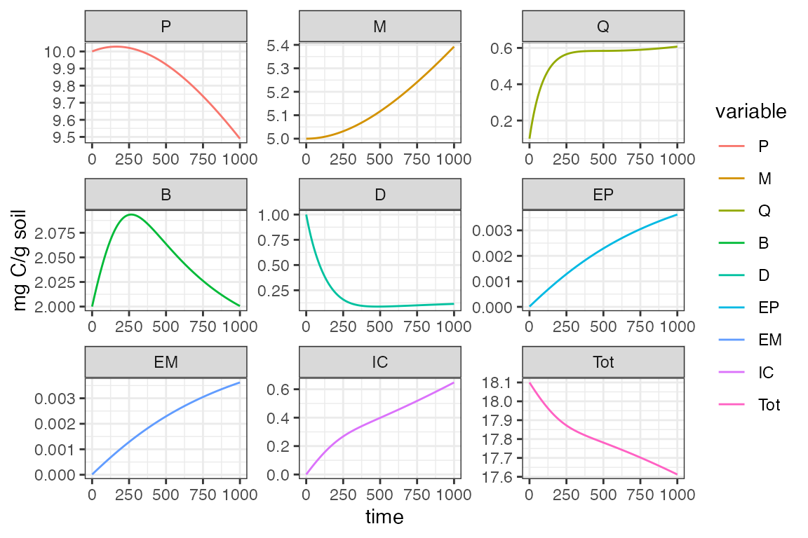
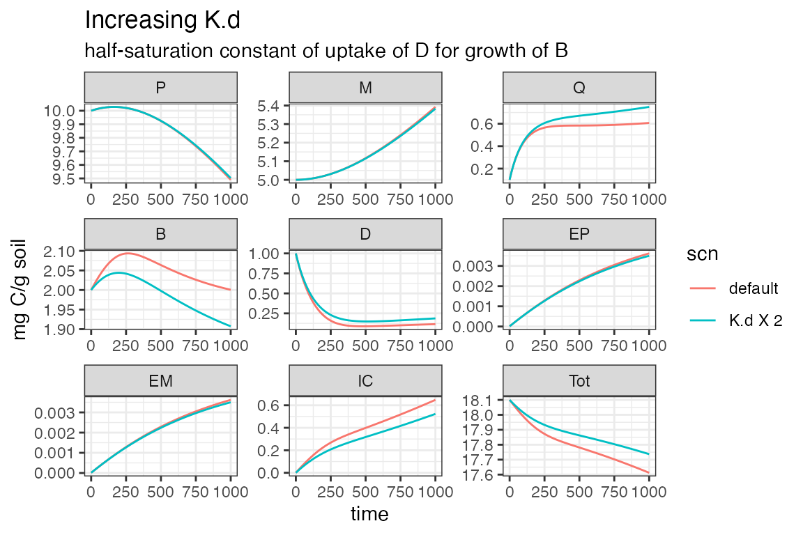

MEND 2013 Example
MEND_2013_example.Rmd
# Load the package, this requires that it had already been installed.
library(MEMC)
# Load other packages used in this vignette
library(ggplot2)
library(data.table)
# Set up a common theme for all of the plots
THEME <- theme_bw()MEND 2013 Background
The 2013 MEND model, originally documented in c is a system of differential equations that describe soil carbon dynamics. There are 8 different carbon pools represented as the circles that are connected by 12 arrows, which represent the fluxes between carbon pools. For more information about the MEND 2013 model we encourage users to read Wang et. al 2013.

Fig 1: conceptual diagram of MEND from Wang et al. 2013
Solve default 2013 MEND
Start out by defining the initial sizes of the carbon pools, since we would like to solve for the default MEND we can simiply us the intial sate vector provided in the package.
state <- MEND2013_initalStateThe same goes for the data table of parameter values, the default parameter values from Wang et. al 2013 are supplied as package data.
params <- MEND2013_paramsDefine the time vector.
t <- seq(0, 1e3, by = 0.1)Solve the MEND configuration.
MEND2013_example1 <- MEND2013(parameters = params, time = t, inital_state = state)
ggplot(data = MEND2013_example1) +
geom_line(aes(time, value, color = variable)) +
facet_wrap('variable', scales = 'free') +
labs(y = unique(MEND2013_example1$units)) +
THEME 
Change MEND parameter values
Change one of the input paramter values.
# Extract the parameter value.
default_Kd <- MEND2013_params[parameter == 'K.d', value]
# Make a copy of the default MEND 2013 parameters and doubble the K.d value.
doubble_Kd_df <- MEND2013_params
# Replace the kd value
doubble_Kd_df[parameter == 'K.d', ]$value <- default_Kd * 2Now solve MEND with the new parameters.
MEND2013_example2 <- MEND2013(parameters = doubble_Kd_df, time = t, inital_state = state)Compare the two simulations!
# Add the smilulation names as columns and combine into a single data frame for visualization.
MEND2013_example1 <- MEND2013_example1[ , scn := 'default']
MEND2013_example2 <- MEND2013_example2[ , scn := 'K.d X 2']
d <- rbind(MEND2013_example1, MEND2013_example2)
ggplot(data = d) +
geom_line(aes(time, value, color = scn)) +
facet_wrap('variable', scales = 'free') +
labs(title = 'Increasing K.d',
subtitle = 'half-saturation constant of uptake of D for growth of B',
y = unique(MEND2013_example1$units)) +
theme_bw()